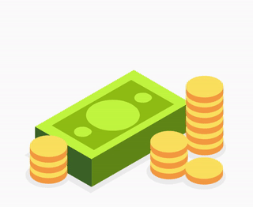

<!DOCTYPE html>
<html>
  <head>
    <script src="jspsych/jspsych.js"></script>
    <script src="jspsych/plugins/jspsych-html-keyboard-response.js"></script>
    <script src="jspsych/plugins/jspsych-audio-keyboard-response.js"></script>
    <link rel="stylesheet" href="jspsych/css/jspsych.css">
    <link rel="stylesheet" href="css/prt.css">
    <script src="config/config.js"></script>
  </head>
  <body></body>
  <script>
    
    /* instructions */

    var instructions_intro_1 = {
      type: 'html-keyboard-response',
      stimulus: `<p>Welcome! Please position your index fingers on the "${CONFIG.LEFT_KEY.toUpperCase()}" and "${CONFIG.RIGHT_KEY.toUpperCase()}" keys for this experiment.
        The game will last approximately ${CONFIG.ESTIMATED_TOTAL_DURATION} minutes and is composed of ${CONFIG.TOTAL_BLOCKS} blocks 
        separated by a break.</p><p>Press the spacebar to continue.</p>`,
      choices: [32]
    }

    var instructions_intro_2 = {
      type: 'html-keyboard-response',
      stimulus: `<p>In this experiment you will be presented with either an image with more squares than circles, or an image with 
        more circles than squares. You will see them one at a time.</p>
        <p>Your task will be to decide whether more squares or more circles were presented by pushing the correct button as quickly
        and accurately as possible.</p>
        <p>The "${CONFIG.LEFT_KEY.toUpperCase()}" key will be used to identify more ${CONFIG.LEFT_SHAPE} and the "${CONFIG.RIGHT_KEY.toUpperCase()}" key will be used 
        to identify more ${CONFIG.RIGHT_SHAPE}. Examples of what the images look like are below:</p>
        <p style="height: ${CONFIG.IMAGE_SIZE/2 + 50}px;">
        </img>
        </img>
        <span style="text-align:center; width:${CONFIG.IMAGE_SIZE/2}px; clear:both; float: left;">More ${CONFIG.LEFT_SHAPE} = ${CONFIG.LEFT_KEY.toUpperCase()}</span>
        <span style="text-align:center; width:${CONFIG.IMAGE_SIZE/2}px; float: right;">More ${CONFIG.RIGHT_SHAPE} = ${CONFIG.RIGHT_KEY.toUpperCase()}</span>
        </p>
        <p>Press the spacebar to continue.</p>`,
      choices: [32]
    }

    var instructions_intro_3 = {
      type: 'html-keyboard-response',
      stimulus: `<p>Now, let's take a practice run. You will see a fixation cross, '+', on the screen. You should always focus your
        attention on the fixation cross as this will help you identify the image as quickly and accurately as possible. The fixation
        cross will be followed by an image with more squares or more circles. Remember, if you think there are more ${CONFIG.LEFT_SHAPE}
        press the "${CONFIG.LEFT_KEY.toUpperCase()}" key. If you think there are more ${CONFIG.RIGHT_SHAPE} press the "${CONFIG.RIGHT_KEY.toUpperCase()}" key.</p>
        <p>If you understand these directions and are ready to proceed to the practice round, please press the spacebar.</p>`,
      choices: [32]
    }

    var instructions_intro = {
      timeline: [instructions_intro_1, instructions_intro_2, instructions_intro_3]
    }

    var instructions_practice_loop = {
      type: 'html-keyboard-response',
      stimulus: `<p>Would you like to practice more? y = yes, n = no</p>`,
      choices: ['y','n']
    }

    var instructions_feedback_1 = {
      type: 'html-keyboard-response',
      stimulus: `<p>For some trials, a correct identification will result in a monetary reward of ${CONFIG.REWARD_AMOUNT} cents.</p>
        <p>Press the spacebar to see what this will look like.</p>`,
      choices: [32]
    }

    var instructions_feedback_2 = {
      type: 'audio-keyboard-response',
      stimulus: 'mp3/reward-sound.mp3',
      prompt: `</img><p class="feedback">Correct! You win ${CONFIG.REWARD_AMOUNT} cents!</p>`,
      trial_duration: CONFIG.FEEDBACK_DURATION,
      choices: jsPsych.NO_KEYS
    }

    var instructions_feedback_3 = {
      type: 'html-keyboard-response',
      stimulus: `<p><span style="color:red; font-weight:bold;">Not all</span> correct responses will receive a reward.</p>
        <p>At the end of the experiment you will be given the amount of money you have accumulated. The more correct identifications
        you make, the more money you will take home.</p>
        <p>Press the spacebar to continue.</p>`,
      choices: [32]
    }

    var instructions_feedback_4 = {
      type: 'html-keyboard-response',
      stimulus: `<p>We are now ready to begin the experiment.</p>
        <p>Remember, focus your attention on the fixation cross before each trial. If you think there are more ${CONFIG.LEFT_SHAPE}
        press the "${CONFIG.LEFT_KEY.toUpperCase()}" key. If you think there are more ${CONFIG.RIGHT_SHAPE} press the "${CONFIG.RIGHT_KEY.toUpperCase()}" key.</p>
        <p>Good luck!</p>
        <p>Press the spacebar to begin.</p>`,
      choices: [32]
    }

    var instructions_feedback = {
      timeline: [instructions_feedback_1, instructions_feedback_2, instructions_feedback_3, instructions_feedback_4]
    }


    /* task */ 

    var fixation = {
      type: 'html-keyboard-response',
      stimulus: '<p class="fixation">+</p>',
      choices: jsPsych.NO_KEYS,
      trial_duration: CONFIG.FIXATION_DURATION
    }

    var target_display = {
      type: 'html-keyboard-response',
      stimulus: function(){
        return `</img>`
      },
      stimulus_duration: CONFIG.STIMULUS_DURATION,
      trial_duration: CONFIG.TRIAL_DURATION,
      choices: [CONFIG.LEFT_KEY,CONFIG.RIGHT_KEY],
      data: {
        block: jsPsych.timelineVariable('block'),
        trial: jsPsych.timelineVariable('trial'),
        rewarded: jsPsych.timelineVariable('rewarded'),
        image: jsPsych.timelineVariable('stimulus')
      },
      on_finish: function(data){
        if(data.image.includes('7C_10S')){
          data.correct_shape = "squares"
        }
        if(data.image.includes('7S_10C')){
          data.correct_shape = "circles"
        }
        if(data.key_press == jsPsych.pluginAPI.convertKeyCharacterToKeyCode(CONFIG.LEFT_KEY)){
          data.correct = data.correct_shape == CONFIG.LEFT_SHAPE
        }
        if(data.key_press == jsPsych.pluginAPI.convertKeyCharacterToKeyCode(CONFIG.RIGHT_KEY)){
          data.correct = data.correct_shape == CONFIG.RIGHT_SHAPE
        }
      }
    }

    var practice_feedback = {
      type: 'html-keyboard-response',
      stimulus: function(){
        var last_trial = jsPsych.data.get().last(1).values()[0]
        if(last_trial.key_press == null){
          return `<p class="feedback">Please respond faster.</p>`;
        }
        if(last_trial.correct){
          return `<p class="feedback">Correct</p>`
        } else {
          return `<p class="feedback">Incorrect</p>`
        }
      },
      trial_duration: CONFIG.FEEDBACK_DURATION,
      choices: jsPsych.NO_KEYS
    }

    var feedback = {
      timeline: [{
        type: 'audio-keyboard-response',
        stimulus: 'mp3/reward-sound.mp3',
        prompt: `</img><p class="feedback">Correct! You win ${CONFIG.REWARD_AMOUNT} cents!</p>`,
        trial_duration: CONFIG.FEEDBACK_DURATION,
        choices: jsPsych.NO_KEYS
      }],
      conditional_function: function(){
        if(jsPsych.timelineVariable('rewarded', true) == 1 && jsPsych.data.get().last(1).values()[0].correct){
          return true;
        } else {
          return false;
        }
      }
    }

    /* practice version */

    var practice_trials = {
      timeline: [fixation, target_display, practice_feedback],
      timeline_variables: [
        {block: null, trial: null, stimulus: 'img/7C_10S_yellow3.jpg', rewarded: null},
        {block: null, trial: null, stimulus: 'img/7C_10S_yellow4.jpg', rewarded: null},
        {block: null, trial: null, stimulus: 'img/7C_10S_yellow5.jpg', rewarded: null},
        {block: null, trial: null, stimulus: 'img/7C_10S_yellow6.jpg', rewarded: null},
        {block: null, trial: null, stimulus: 'img/7S_10C_yellow1.jpg', rewarded: null},
        {block: null, trial: null, stimulus: 'img/7S_10C_yellow2.jpg', rewarded: null},
        {block: null, trial: null, stimulus: 'img/7S_10C_yellow3.jpg', rewarded: null},
        {block: null, trial: null, stimulus: 'img/7S_10C_yellow4.jpg', rewarded: null}
      ],
      data: {
        phase: 'practice'
      },
      randomize_order: true
    }

    var practice_procedure = {
      timeline: [practice_trials, instructions_practice_loop],
      loop_function: function(data){
        return data.last(1).values()[0].key_press == jsPsych.pluginAPI.convertKeyCharacterToKeyCode('y');
      }
    }

    /* real version */
    
    var test_procedure = {
      timeline: [fixation, target_display, feedback],
      timeline_variables: CONFIG.TRIAL_INFO,
      data: {
        phase: 'test'
      }
    }

    /* save data */ 

    /* end */ 


    /* initialization */
    var timeline = [];

    timeline.push(instructions_intro);
    timeline.push(practice_procedure);
    timeline.push(instructions_feedback);
    timeline.push(test_procedure);

    jsPsych.init({
      timeline: timeline,
      preload_images: CONFIG.IMAGE_LIST,
      preload_audio: ['mp3/reward-sound.mp3'],
      use_webaudio: false,
      experiment_width: 800
    })
  </script>
</html>